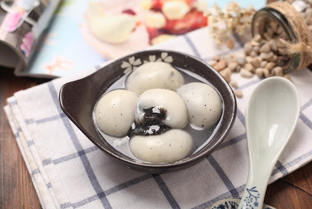

中国新年 (Čínsky nový rok)
Čínsky nový rok (农历新年 ) alebo Sviatky jari (春节) je najvýznamnejší z tradičných čínskych sviatkov. Niekedy je označovanýaj ako Lunárny nový rok, najmä ľuďmi žijúcimi mimo Číny.
Je to dôležitý sviatok v juhovýchodnej Ázii. Jeho oslavy sa tradične začínajú od prvého dňa prvého lunárneho mesiaca (正月) čínskeho
kalendára a končia sa 15. deň, ktorý je známy ako Sviatok lampiónov (元宵节).
龙年(Rok draka)
Drak je piatym zvieraťom z dvanástich zvierat zverokruhu v čínskej astrológii .Drak je jediné mytologické zviera v čínskom zverokruhu . V Číne sú draci spájaní so silou, zdravím, harmóniou a šťastím; sú umiestnené nad dverami a na strechách, aby odstrašili démonov a zlých duchov. V čínskych kultúrach sa v roku Draka rodí viac detí ako v ktoromkoľvek inom roku.
汤圆(Tangyuan)
V plnenom a neplnenom tangyuane je hlavnou zložkou lepkavá ryžová múka . Môže byť vyrobený sladký a slaný tangyuan. Tangyuan sa varí vo vriacej vode . Plnený tangyuan sa podáva s vodou, v ktorej sa varil. Neplnený tangyuan sa podáva ako súčasť sladkej polievky (cukrová voda) ako dezert .
春联(Spring couplets)
Chunlian je tradičná dekorácia, ktorá sa často používa počas čínskeho nového roka. Ľudia dávajú na dvere, aby vytvorili veselú sviatočnú atmosféru, pretože frázy napísané na ňom odkazujú na „veľa šťastia“ a „prosperity“
福字(slovo"福(fu)")
Znak fu (福) je jedným z najbežnejšie videných čínskych znakov. Význam znaku je „požehnanie“ a „šťastie“, čo stelesňuje túžbu ľudí po šťastnom živote a lepšej budúcnosti. Ako dekorácia sa objavuje na dverách, plagátoch, lucernách, obrazoch, hrncoch, zvonkohrách a na ďalších predmetoch a miestach. Predstavuje tiež Boha šťastia (Fu), ktorý je súčasťou šťastnej božskej trojice Fu, Lu a Šou (Bohové šťastie, prosperity a dlhého života)
灯笼(Lampáš)
Červené lampáše alebo červené lampáše sú lampióny, ktoré súčasná Čína a Číňania zdobia počas festivalov, sú tiež symbolom Číny a v pevninskej Číne majú dokonca určitý politický význam. Jeho vzhľad je sploštený, s hornými a spodnými kolesami a visiacimi strapcami na spodnom kolese, ale jeho dizajnový tvar nie je tradičným čínskym tvarom osvetlenia.
Na miestach, ako je Hongkong, Macao, Taiwan a zámorské oblasti obývané Čínou, sa červené lampáše zvyčajne považujú len za všeobecné oslavy alebo dekorácie, ktoré odrážajú architektúru v čínskom štýle, a bežne sa vyskytujú počas jarného festivalu.
饺子(Knedľa)
Jiaozi (饺子) sú typom čínskej knedle. Jiaozi majú v Číne veľký kultúrny význam. Jiaozi sú jedným z hlavných jedál, ktoré sa jedia počas čínskeho nového roka v celej severnej Číne a jedia sa po celý rok v severných provinciách.Knedľa sa najviac podobá ravioli , guličke z cesta s náplňou. Cesto Jiaozi sa zvyčajne skladá len z múky a vody , ale kvôli farbe sa môže pridať aj zeleninová šťava . Jiaozide cesto vyvaľkané na malé tenké pláty sa nazýva „koža“ (皮). Náplň (餡) môže pozostávať z takmer akéhokoľvek jedla, hoci bravčové mäso a čínska kapusta sú pravdepodobne najbežnejšie. Jiaozi sa často konzumuje s omáčkou založenou na sójovej omáčke a octe, často s prísadami, ako je čili paprička , cesnak a sezamový olej .

f
红包(Červená obálka)
Červená obálka (红包) je tradičný čínsky darček, prostredníctvom ktorého sa darujú peniaze, a to predovšetkým na Čínsky nový rok. Svoju obľubu majú ale aj počas iných príležitostí, ako sú napríklad svadby, narodeniny či iné významné dni.
年夜饭(Silvestrovská večera)
Nyanyefan je dôležitou súčasťou sviatku a je plný mnohých symbolov a tajných významov. Je teda tradičné pripravovať jedlo na Silvester(除夕) niekoľko hodín pred sviatkom, pretože sa predpokladá, že celý rok uplynie tak, ako sa bude sláviť. Aby bol budúci rok výživný, je zvykom dávať na novoročný stôl dostatok jedla a je dôležité, aby medzi výrobkami boli slová v súlade s čínskymi slovami pre šťastie a prosperitu - kuracie mäso , ryba a tofu.
春晚(Spring couplets)
CCTV novoročný galavečer je program produkovaný centrálnou televíziou Číny (CCTV), ktorý sa vysiela v predvečer čínskeho nového roka. Je to jeden z najdôležitejších programov čínskej televízie s publikom najmenej 700 miliónov ľudí a je silne zakorenený v oslavách čínskeho nového roka . Program kombinuje hudbu, tanec, mágiu a komické dialógy a predstaví niektoré z najznámejších hviezd zábavy v Číne.
舞龙(Dračí tanec)
Dračí tanec je forma tradičného tanca a predstavenia v čínskej kultúre. Podobne ako leví tanec ho možno najčastejšie vidieť počas slávnostných osláv. Tanec predvádza tím skúsených tanečníkov, ktorí manipulujú s dlhou ohybnou obrou bábkou draka pomocou tyčí umiestnených v pravidelných intervaloch po dĺžke draka.
舞狮(Leví tanec)
Leví tanec je forma tradičného tanca v čínskej kultúre, ktorý vykonáva dvoch vystupujúcich v levom kostýme. Jeden z tanečníkov manipuluje hlavou a druhý zadnou časťou tela. Tanec sa tradične vykonáva v období rôznych sviatkov a osláv, najmä v období Sviatkov jari.
放鞭炮(Petarda)
Odpaľovanie petárd je tradičný čínsky ľudový zvyk s viac ako 2000-ročnou históriou. Podľa legendy to malo odohnať monštrum menom „Nian“. O polnoci zazvoní novoročný zvon a zvuk petárd sa ozýva po celej Číne. V tomto momente „troch juanov“ „Yuan Yuan“, „Yuan Yuan“ a „Yuan Yuan“ je na niektorých miestach na nádvorí postavený „energický oheň“, čo znamená, že obloha je plná energie a blahobytu. Zveruje čínskemu pracujúcemu ľudu krásne prianie privítať šťastie a získať požehnanie.
放烟花(Ohňostroje)
Ohňostroje, tiež známe ako ohňostroje, pyrotechnika, ohňostroje a petardy, sú definované podľa „čínskych noriem pre ohňostroje a petardy – bezpečnosť a kvalita“ ako zábavné produkty, ktoré využívajú pyrotechnický prášok ako suroviny a používajú sa na výrobu zvuku, svetla a farieb. Pracujúci ľudia v Číne ho vynašli skôr a často sa používa pri veľkých obradoch alebo predstaveniach.
拜年(Petarda)
Bainian je rituál bežný v južnej Číne počas čínskeho nového roka . Vykonávajú ho dvaja ľudia. Najmladší človek spraví päsť pravou rukou a ľavú zloží na päsť. Potom jeden potrasie týmito rukami proti druhému človeku a zaželá mu veľa šťastia. Druhý robí na oplátku to isté. Ak je starší človek ženatý a mladší ešte nie je, mladší dostane hongbao (紅包), červenú obálku s peniazmi.